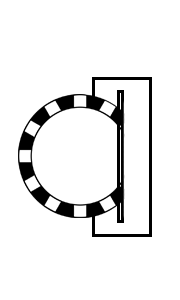

탑승방법
편리한 대구지하철 2호선. 이렇게 탑승합니다.
지상에서
손잡이를 잡고 조심히 내려가세요.
왕복이 예정된 경우, 반대쪽 출구를
미리 알아두면 편리합니다.
내리는 사람 우선으로 탑승합니다.
내려갈 층의 버튼을 누르고 기다립니다.
가능하면 계단을 사용합니다.
방향을 확인하고 탑승하세요.
이미 탑승하여 내려가는 중일때는
억지로 올라가려 하지 마세요.
탑승권의 구매, 교통카드 충전
발매기에서 일반/어린이 버튼을 누릅니다.
구매갯수를 선택하고 돈을 넣습니다.
거리와 무관하게 요금은 통일입니다.
예쁘게 생긴 토큰과 잔돈을 챙깁니다.
대경교통카드를 충전위치에 올려놓습니다.
인식되면 충전금액을 천원단위로 선택하고
지폐를 투입 후 잠시 기다립니다.
잔돈과 카드를 챙겨 갑니다.
선불형 교통카드나 티머니는
해당 충전방법을 따로 알아두세요.
교통카드충전기에서는 티머니 충전 불가.
개찰구통과와 열차 탑승
개찰구가 나눠진 곳에서는
탑승방향을 잘 보고 들어가세요
잘못들어서면 역무원에게 얘기하세요

문이 완전히 열리면 탑승하고
사람들이 먼저 내리고
나중에 탑승합니다.
차례로 두줄로 기다립니다.
혼잡한 칸은 바닥에 설명되어 있습니다.
옆 칸을 타는 것이 편리합니다.
도착한 후에는

미리 내릴 역 전에 준비하세요.
문이 완전히 열리면 내리세요.
탑승객과 부딪힘에 주의하세요.

1회용 승차권은 반납하세요.
개찰구 동전 구멍같은 곳에 넣습니다.
보증금반환 없어요... 양심껏 반납하세요.
천장의 안내표지에 따라
나가는 방향을 잘 판단하여
올바른 출구번호를 찾아 안전히 나가세요.